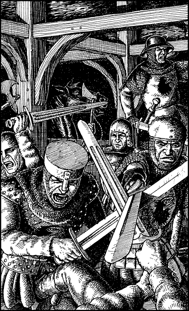

34
You break the bad news to Karvas and he explodes with rage. Immediately he kicks back his chair and unsheathes his sword. ‘You, there, skulking in the shadows,’ he bellows, pointing with his sword at the Cavalians on the far side of the taproom. ‘You’re the cowards who murdered Baron Jayde. Step out of the shadows and face your accuser, if you dare!’
The Cavalians laugh and sneer at Prince Karvas’ accusation. ‘Watch your tongue, journeyman,’ retorts their leader, a scar-faced sergeant with a shaved head. ‘We Siyenese don’t take kindly to Northland troublemakers.’ Another of the group calls out to the tavern-keeper, demanding that he come and throw you out. Sheepishly the tavern-keeper approaches and he asks that you both leave. You sense that he has no liking for the Cavalians, but Karvas’ outburst has unsettled his other guests, some of whom are already hurrying out of the door.
You take hold of the Prince’s arm and pull him along as you move towards the tavern door. The Cavalians fix you with murderous stares as you leave, but they do not attempt to follow you. Once you are outside, you hurry across to the stables to fetch your horses.
You are about to enter when suddenly you notice the body of a young boy lying partially buried beneath a heap of straw. By the colour and cut of his clothing, you recognize the body to be that of the stable boy who took charge of your horses when you first arrived here. Swiftly you unsheathe your Kai Weapon as you enter the stables. Your caution is justified, for as soon as you pass through the stable door, you are attacked by six Cavalian bandits who have been lying in wait for you and Karvas to appear.

Cavalian Bandits: COMBAT SKILL 40 ENDURANCE 36
You may add 5 points to your COMBAT SKILL for the duration of this combat, for Prince Karvas is helping you to fight these murdering bandits.
If you win the combat in three rounds or less, turn to 215.
If it takes you four rounds or more to win this combat, turn to 103.